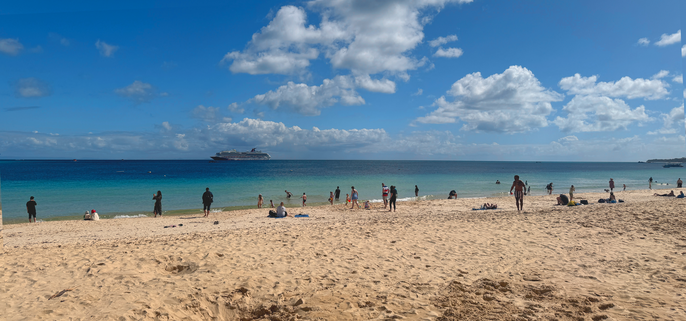
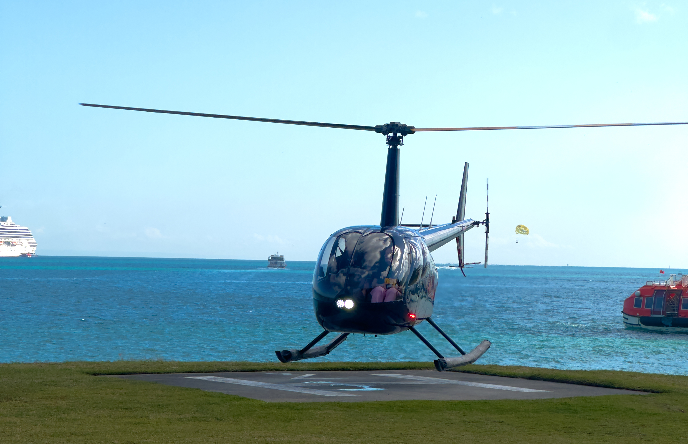
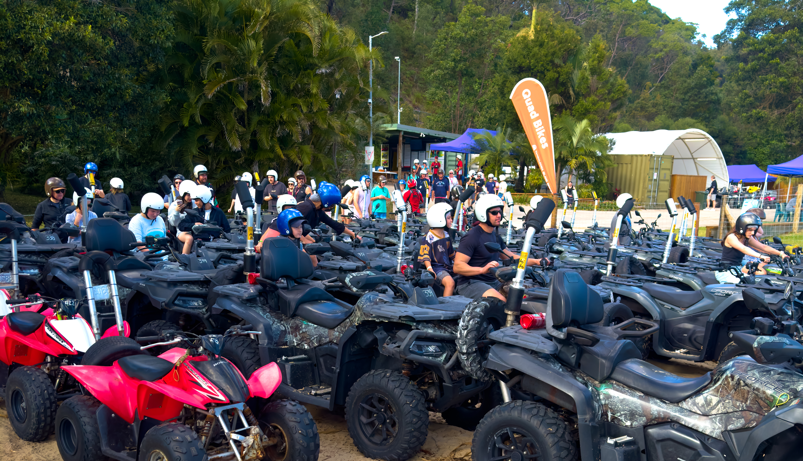
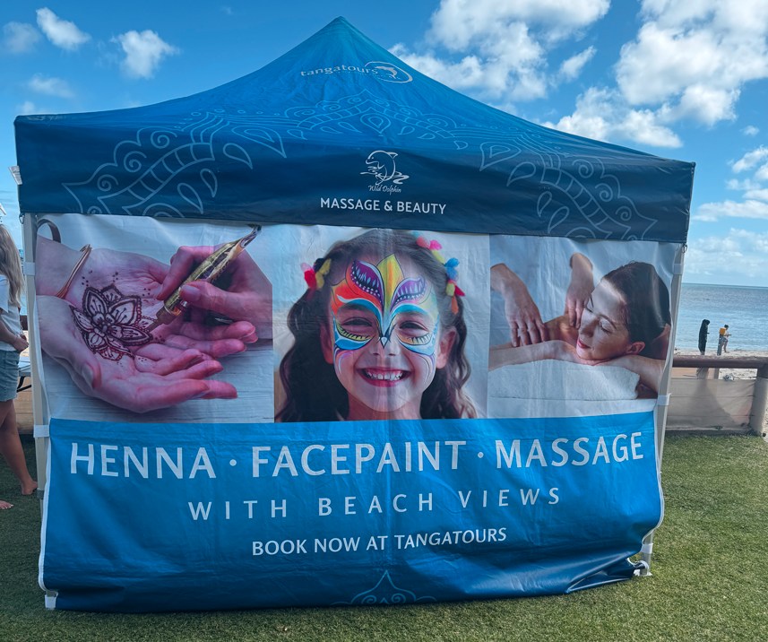
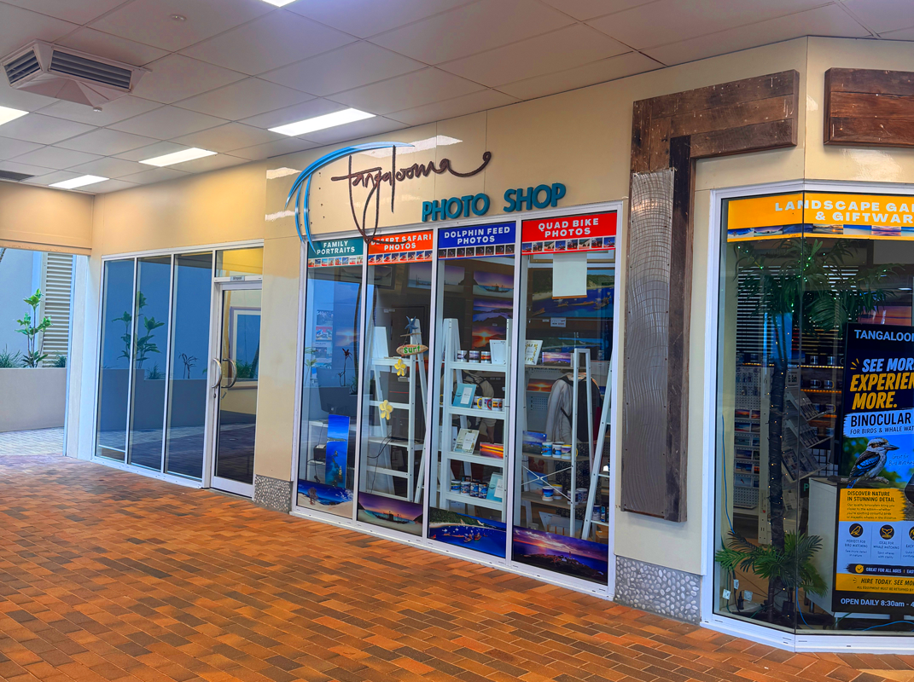
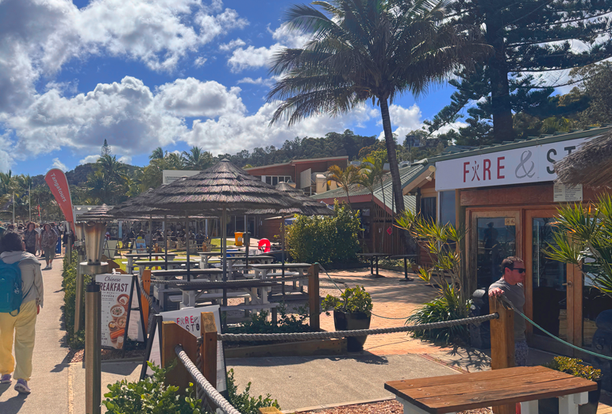

Quick facts: Tangalooma Resort Moreton Island Cruise Port 2026
- Location: Off Brisbane, Queensland - 75 min ferry from Brisbane, tender port for Carnival Splendor Sydney sailings
- Port type: Tender port only. No road access. Last tender usually 4pm - don't miss it. 10 min tender boat ride from ship to beach.
- Currency: AUD - cash for market stalls, card for resort activities
- WiFi: Limited free near Tangalooma Information Centre. No free WiFi on beach. Carnival WiFi won't work here.
- Best for: Free beach day, Tangalooma Wrecks snorkeling, dolphin feeding, ATV Rides
Here's what to do if you didn't pay for an excursion onboard.
- ⭐ Best Seller: ATV Quad + Sand Toboggan - From $129 AUD Check Viator Price → | Klook Price →
- 🐬 Sea Scooter Snorkel at Tangalooma Wrecks - From $89 AUD Check Price →
- 🚁 Helicopter Over Wrecks + Ship - From $159 AUD Check Price →
The walk from the tender pier to the Information Centre takes about 1 minute. On the way you’ll spot the resident pelicans hanging out — perfect photo op. Once you’re at the centre you’re officially in the resort, and that’s where you’ll find all the activities, tours, and maps to get you started.
Top Things To Do on Moreton Island
1. Beach Time + Meet the Pelicans

The main beach is right where the tender drops you. Soft sand, calm water, and lifeguards on duty. On the 1-minute walk from the pier to the Information Centre you’ll see the resident pelicans on the jetty — perfect photo op. It’s perfect if you just want to relax, swim, and eat while you wait for your excursion.
2. Wild Dolphin Feeding

The #1 reason people book this port. Every evening wild bottlenose dolphins swim to shore to be fed by guests with marine biologists. It’s free and happens right on the beach. Arrive 30min early for a good spot.
3. Helicopter Ride

See the island, shipwrecks, and coastline from above. 10-15 min flights available near the resort. Insane views of your cruise ship from the air.
4. ATV / Quad Biking + Sand Tobogganing

Ride across massive sand dunes and bush tracks on a guided 4WD safari. Then go sand tobogganing down the dunes. Dusty, fast, and so much fun. Book early because spots fill fast on cruise days.
5. Snorkeling + Sea Scooter
The Tangalooma Wrecks are 10 minutes away by kayak or boat. One of the best shore snorkel spots in Australia with fish, turtles, and coral. Level up: Try Sea Scooter Snorkeling — a motorized scooter pulls you through the water while you snorkel. Spots sell out, book at the Info Centre ASAP.
6. Glass Bottom Boat + Whale Watching
Same wrecks, no swimming needed. The glass bottom boat tours the shipwrecks year-round. Bonus: From June to October it’s whale season. You can often spot migrating humpbacks from the beach or on a dedicated whale watching tour.
7. Parasailing + Jet Ski
Get towed 150ft above the water for views of the whole island and your ship in the distance. Or take a guided Jet Ski Safari around the wrecks and coastline. High-adrenaline and a huge cruise day favorite.
8. Kayaking + SUP
Rent kayaks and stand-up paddleboards right from the beach and paddle 1.2km out to the Tangalooma Wrecks yourself. Calm water makes it perfect for beginners.
9. Henna Art + Face Painting

Local artists set up near the beach. Get a quick henna design or fun face paint — super popular with kids and looks amazing in photos.
10. Nature Walks
Walk the sand dunes and bushy mountain parts. It gives you that real "off-grid" nature feel while you wait for your tour.
Important Tips + Warnings
Photos

Island photographers take photos of you during tours on Moreton Island. Important: These photos do NOT go onto your cruise ship. You have to go to the Photo Shop on Moreton Island to view, edit, and buy them after your excursion.
Food + Relaxing

There are cafes and BBQ areas near the tender drop-off. Nice place to sit, eat, and relax while you wait for your next activity.
Tendering
Because it’s a tender port, keep an eye on last tender time. Lines get long 1 hour before all-aboard. Tenders usually stop 30min before departure.
Resort Rules
- No Fishing Zones: Fishing is strictly prohibited around the jetty